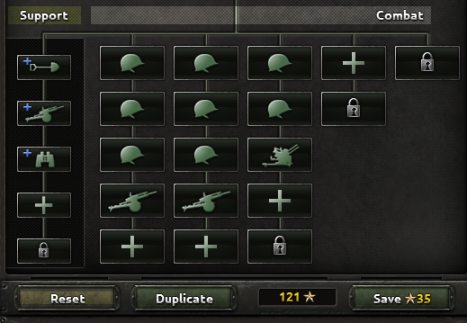
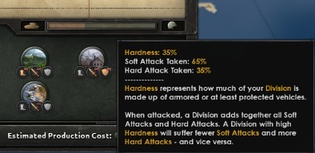

师
原页面：Division
师是游戏过程中在地图上显示的主要单位。师在省份内作战，可通过海军入侵运输，并可参与陆战。
师编制
每个师的编成由其师编制决定。每个国家开局都有一个或多个师编制，可用于下达新陆军单位的招募与部署命令。师编制可通过消耗陆军经验来创建和修改。创建新编制的方式有两种：一是使用「复制」按钮复制某个编制，给它取一个与现有编制不同的名称，然后按下文所述对该编制进行修改；二是选中名称后按「创建空白」。某些解锁新营类型的科技（例如山地兵）也会为其生成基础编制。陆军经验只有在使用「保存」按钮保存修改时才会扣除，该按钮上同时显示总花费，因此玩家可以在做决定之前反复试验并分析修改结果。
修改编制后，所有基于该编制的师会立即下达补充所需人力和装备的订单，并将现已多余的人力和装备退回国家储备。在修改近期可能参战的师的编制之前，最好先在国家储备中备好所需的人力和装备。逐个升级单位可能更为稳妥。
师无法再拆分为更小的游戏单位，但如果选中的师不隶属于任何集团军，就可以在陆军窗口中使用合并按钮合并同一编制下不满编的师。对于人力或装备紧缺、却需要投入足额规模师的国家来说，这种合并极为有用。
在该师的编制打开时，于单位详情界面中选择头盔、坦克或其他单位符号图标，即可随时更改师所使用的编制，并在其中任选一个可用编制。
每个师最多由五个战斗团和五个支援连组成。每个战斗团又由最多五个营组成。为一个师添加一个营需要花费 5 XP；无论它属于同一个团还是新团都是如此。添加不同单位类型（步兵、机动或装甲）的营时，每多一种单位类型就要额外花费 20 XP。

| 师 | |||||
|---|---|---|---|---|---|
| 团 | 团 | 团 | 团 | 团 | |
| 连 | 营 | 营 | 营 | 营 | 营 |
| 连 | 营 | 营 | 营 | 营 | 营 |
| 连 | 营 | 营 | 营 | 营 | 营 |
| 连 | 营 | 营 | 营 | 营 | 营 |
| 连 | 营 | 营 | 营 | 营 | 营 |
在营的层面上，一个师可以拥有任意数量的同一单位类型，但在支援连的层面上，每种单位类型只能有一个。
师编制可以指定为预备、常规或精锐。精锐师会优先获得更好的装备，其次是常规师，最后是预备师。
当有多种装备类型可用时，每个师编制都可以指定接收特定类型的装备。例如，精锐师只使用最新的武器，而预备师则使用最老旧的武器。
战斗营
师中的每个战斗团完全由单一营类型下的若干营混合组成。三种营类型分别是：
- 步兵营：步兵、特种部队、一线（牵引式）火炮/防空/反坦克
- 机动营：骑兵、摩托化步兵、机械化步兵、摩托化火箭炮、摩托化火炮/防空/反坦克、装甲车
- 装甲营：坦克、坦克歼击车、自行火炮/防空、两栖坦克
增加师中的营数量会改变师的属性：例如新增战斗营会提高师的 HP 和战斗宽度，并且通常至少会提高各项攻击与防御属性。请注意，师的组织度是所含各营组织度的平均值，因此添加新营时师（平均）组织度反而可能下降。更多讨论请参见§ 规模。
装甲、穿甲和硬度属性的计算方式则有所不同：
- 装甲： 40% *（单个营的最高装甲）+ 60% *（所有营与连的平均装甲）= 师的装甲
- 示例： 如果有 3 个营：2 个步兵（1936）和 1 个轻型坦克（1934），则计算如下：
40% * [Highest Armor] + 60% * [Average] = 40% * [10.0] + 60% * [(0 + 0 + 10) / 3)] = 4 + 2 = 6
- 穿甲： 40% *（营或支援连的最高穿甲）+ 60% *（所有营与连的平均穿甲）= 师的穿甲
- 硬度： 一线营硬度的平均值 = 师的硬度
- 示例： 如果有 4 个营：2 个步兵（1936）和 2 个轻型坦克（1934），则计算如下：
Average of Hardness of Line Battalions = Hardness of the Division (80 + 80 + 0 + 0) / 4 160 / 4 = 40
战斗营的构成决定了最高统帅部加成或指挥官特质如何作用于该师。它们的加成会根据目标营在战斗营总数中所占的数量进行修正。
支援连
- 主条目：支援连科技
一个师最多可以拥有五个不同的支援连。在学说和游戏的其他部分中，这些被称为“整合支援”，以区别于“分散支援”——后者是指编入战斗团纵列中的火炮、防空或反坦克类团。可选的支援连如下：
- 支援火炮连：由于火炮较少，其软攻加成低于一线团的火炮营。它不会拖慢师的速度†，也不影响空降。
- 支援防空连：由于火炮较少，其对空攻击加成低于一线团的防空营。它不会拖慢师的速度†，也不影响空降。
- 支援反坦克连：由于火炮较少，其硬攻和穿甲加成低于一线团的反坦克营。它不会拖慢师的速度†，也不影响空降。
- 支援火箭炮连：与普通支援火炮类似，但还会为师的突破属性提供加成，该属性用于在进攻时规避敌军攻击。
- 工兵连：提高师的构筑工事属性，并有助于攻击要塞和渡河。
- 骑兵侦察连：提高在困难地形†中的速度以及师的侦察属性，使战斗中更容易克制敌方的战斗战术。
- 摩托化侦察连：提高在困难地形†中的速度以及师的侦察属性，使战斗中更容易克制敌方的战斗战术。
- 装甲车侦察连：提高在困难地形†中的速度以及师的侦察属性，使战斗中更容易克制敌方的战斗战术。
- 轻型坦克侦察连：提高在困难地形†中的速度以及师的侦察属性，使战斗中更容易克制敌方的战斗战术。
- 军事警察：为其所在师的一线营提供镇压属性加成，有助于减轻游击队的影响。让军事警察连搭配 2-6 个仅配备最低限度装备、训练程度最低的骑兵营，就能组成一支高效的二线治安师。
- 维修连：为师提供装备可靠性加成，减少训练和战斗中的装备损失。建议配给使用昂贵装备（如坦克）的战斗单位。
- 野战医院：提高伤员归队属性（将损失人力的一定比例返还人力池），并减少因伤亡造成的经验损失。建议配给前线战斗师。
- 后勤连：降低整个师的补给消耗。这在补给匮乏的地区很有价值，也能避免因补给原因而被迫分散部署。
- 通信连：提高师的主动性属性，加快计划速度，并提高战斗中预备队增援的概率。
† 大多数（但并非全部）支援连不影响师的速度，也不影响战斗宽度，因为当“前线”战斗营交战时，它们是留在战斗前线后方的部队。因此，牵引式反坦克支援连不会影响一支快速师 12 kph 的速度，但若在团的纵列中加入一个牵引式反坦克战斗营，就会把该师拖慢到牵引式反坦克炮 4 KPH 的基础速度。所以，支援火炮、防空或反坦克支援单位能为快速师提供宝贵的能力。
不过，侦察连确实会影响师的速度。它们不仅决定整个师的最高可能速度，而且（与一线营一样）如果缺少必需的装备，其速度也会下降（骑兵需要步兵装备和支援装备，摩托化侦察需要这些再加上摩托化装备，装甲车侦察只需要装甲车，轻型坦克侦察只需要轻型坦克）。由于侦察连只需要 10 件支援装备或 24 辆坦克，缺少少量装备就可能对整个师的速度造成很大影响。
以 4 kph 行军的步兵师，与同样以 4 kph 行军的战斗营配合得恰到好处。在师编制界面中，添加支援连给师整体属性带来的额外加成与效果可在提示框中查看。尽管这些连在历史上可能远大于连级规模，但为了与一线团中的营区分开，它们仍被称为支援连。
陆军经验花费
修改师编制可能会花费陆军经验。
| 操作 | XP 花费 | 备注 |
|---|---|---|
| 复制编制 | 0 | |
| 更改编制的装备 | 0 | |
| 更改编制的名称或图标 | 0 | |
| 更改编制的优先级 | 0 | |
| 添加现有类型的战斗团 | 5 | 包含一个营。 |
| 添加新类型的战斗团 | 25 | 包含一个营。 |
| 添加/替换战斗营 | 5 | |
| 移除一个营 | 5 | 这会移除团中的最后一个营，从而移除该团。 |
| 将战斗营改为现有类型 | 每营 5 | 现有营可以在同类型的团之间调动，或调入新团，无需额外花费。 |
| 将战斗团改为新类型 | 25 + 每营 5 | 更改团中第一个（最上方）营时，首先要选择类型。如果选择了不同的类型，该团的所有营都会变为该营类型。 |
| 添加/替换支援连 | 10 | |
| 移除支援连 | 10 |
装甲编制
有些国家在 1936 年就已经研究出一些坦克装备，这些国家在游戏开局时会获得一个装甲编制。这通常是一个与其一个或多个初始师战斗序列相符的历史编制。例如意大利（“Divisione Celere”编制）和苏联（“Mekhanizirovaniy Korpus”编制）都属于这种情况。这些编制让你可以用轻型坦克创建新的装甲师。只要你有陆军经验，就可以修改这个历史编制。
少数国家在游戏开始时已经研究出一些坦克装备，但实际上并没有任何历史装甲师。例如加拿大等英联邦国家，它们在 1936 年获得了坦克装备的科研（由英国共享），但当时并没有装甲师。这些国家在游戏开局时会获得一个装甲编制（名为“Armored-Division”），以便日后创建装甲师。
所有其他国家在研究出第一种坦克装备时，都会免费获得一个编制（名为“Armored-Division”）。
免费的“Armored-Division”编制以及某些国家的初始编制始终是轻型坦克编制。要修改这些编制或其副本，以便使用中型或重型坦克，需要花费一些陆军经验。科研一完成，师编制界面就允许你用中型或重型坦克替换轻型坦克营。每个营花费 5 XP。
硬度

师编制界面在属性下方有一条横条，显示用该编制创建的师的硬度。
硬度表示你的师中有多大比例由装甲车辆或至少具备防护的车辆组成。免费的“Armored-Division”编制尽管有两个轻型坦克营和两个骑兵营，硬度却只有 35%。你可以通过添加更多坦克营，用中型替换轻型、用重型替换中型，或用摩托化或机械化营替换“软”营（步兵或骑兵）来提高硬度。
例如，把默认“Armored-Division”编制中的两个轻型坦克营换成中型坦克、把两个骑兵营换成机械化营，硬度就会从 35% 变为 70%。高硬度的师在战斗中很少被硬攻值低的师命中——例如使用 1936 年装备且没有反坦克装备的步兵。
规模
The 陆军单位的属性值 combine in different ways in divisions, and these values have special implications for deciding whether one should "scale up" a division template, e.g. doubling up the battlions to go from a 20 战斗宽度 to a whopping 40. Any modifications must be view in the context of the current 陆战伤害系统.
如前所述，软/硬攻与防御/突破是累加计算的；编制宽度翻倍，这些数值也随之翻倍。在当前系统中，如果攻击被敌方单位的防御挡下，只有 10% 的攻击会被计入伤害；而当攻击点数耗尽防御点数时，则有 40% 计入。换言之，未被敌方防御挡下的攻击点，其效果是被挡下的攻击点的四倍。尽管各单位会共同消耗敌方单位的防御，但在此情况下，与拥有两个同等较小规模的师相比，拥有一个更大的师仍能更有效地消耗敌方单位的防御，因为它消除了随机因素，并使消耗更为集中。
另一方面，把师规模翻倍并不会让师对实际伤害的抵抗力翻倍，因为组织度并不会随之增加。伤害命中组织度的频率是命中 HP 的两倍（HP 是累加的），而且对陆军单位来说，防御通常很容易堆叠。此外，小规模师由于数量众多而更加灵活，可以在需要时实施包围并填补不断延长的战线；不过这也会占用指挥能力。小规模师还能使用更多支援武器连，其中许多连在每点装备带来的属性贡献上比一线连更划算；但另一方面，它们会增加非武器支援连的花费，因为要达到相同的百分比加成，需要更多的这类连。
因此，一般而言，20 宽度的师更擅长防御，40 宽度的师更擅长进攻。当然，编成决定成败，但用大规模师组成突破集团军、再用若干标准规模的师守住实际战线，是一条可靠的通则。
师的单位类型
师的总体单位类型由其默认师图标表示。所有营都有一个或多个标明其类型的标签。师类型通过将内部“优先级”权重乘以各类型营的数量来确定，得分最高的类型即作为定义师类型的样本单位。如果有多个单位类型的加权优先级相同，则以编制中第一个（最上方、最左侧）单位确定样本类型。
在游戏文件中，单位类型优先级权重位于 ...\common\units\ 目录下的单位定义文件中。这些数值在此列出以供参考。
| 单位 | 优先级 | 类型 |
|---|---|---|
| 防空炮 | 301 | 步兵防空 |
| 反坦克炮 | 1197 | 步兵反坦克 |
| 两栖机械化 | 610 | 机械化 |
| 两栖坦克 | 2501 | 装甲 |
| 装甲车 | 501 | 摩托化步兵 |
| 火炮 | 1198 | 步兵火炮 |
| 骑兵 | 599 | 步兵骑兵 |
| 工兵连 | 0 | 步兵支援 |
| 野战医院 | 0 | 步兵支援 |
| 重型自行防空炮 | 301 | 装甲防空 |
| 重型自行火炮 | 1797 | 装甲火炮 |
| 重型坦克 | 2503 | 装甲 |
| 重型坦克歼击车 | 1797 | 装甲反坦克 |
| 步兵 | 600 | 步兵 |
| 轻型自行防空炮 | 301 | 装甲防空 |
| 轻型自行火炮 | 1795 | 装甲火炮 |
| 轻型坦克 | 2501 | 装甲 |
| 轻型坦克歼击车 | 1795 | 装甲反坦克 |
| 后勤连 | 0 | 步兵支援 |
| 维修连 | 0 | 步兵支援 |
| 海军陆战队 | 601 | 步兵特种部队 |
| 机械化步兵 | 610 | 机械化 |
| 中型自行防空炮 | 301 | 装甲防空 |
| 中型自行火炮 | 1796 | 装甲火炮 |
| 中型坦克 | 2502 | 装甲 |
| 中型坦克歼击车 | 1796 | 装甲反坦克 |
| 军事警察 | 0 | 步兵支援 |
| 现代自行防空炮 | 301 | 装甲防空 |
| 现代自行火炮 | 1796 | 装甲火炮 |
| 现代坦克 | 2510 | 装甲 |
| 现代坦克歼击车 | 1796 | 装甲反坦克 |
| 摩托化防空炮营 | 301 | 摩托化防空炮营 |
| 摩托化反坦克炮营 | 1197 | 摩托化反坦克炮营 |
| 摩托化火炮营 | 1198 | 摩托化火炮营 |
| 摩托化步兵 | 599 | 摩托化步兵 |
| 摩托化火箭炮 | 1199 | 摩托化火箭炮 |
| 山地兵 | 601 | 步兵特种部队 |
| 伞兵 | 2 | 步兵特种部队 |
| 侦察连 | 0 | 步兵支援 |
| 火箭炮 | 1199 | 步兵火炮 |
| 通信连 | 0 | 步兵支援 |
| 超重型自行防空炮 | 301 | 装甲防空 |
| 超重型自行火炮 | 1798 | 装甲火炮 |
| 超重型坦克歼击车 | 1798 | 装甲反坦克 |
| 超重型坦克 | 2520 | 装甲 |
| 支援防空连 | 0 | 步兵支援 |
| 支援反坦克连 | 0 | 步兵支援 |
| 支援火炮连 | 0 | 步兵支援 |
| 支援火箭炮连 | 0 | 步兵支援 |
| 卡车牵引火箭炮营 | 1199 | 摩托化火炮营 |
师示例
- 1939-1944 年的历史上的师
「Strategy」
属性优化
通常有必要针对特定且可能出现的战场或角色来优化师。这需要搭配正确的营和连。
不满编时的属性
当师不满编时，其属性会按照现有兵力能操作多少可用装备的原则而降低。在非战斗状态下，总体的“当前战斗力”比率取人力比率与按花费加权的装备比率中的较低者。师的属性是其所有营与连按上述方式组合后的属性，其计算方式与总体兵力比率不同。对每个营（连）而言，装备属性按该营使用的每种装备的人力比率与未加权装备比率中较低者进行折算，而子单位属性（包括地形修正，但不包括组织度、恢复速度和战斗宽度）只按人力比率折算；除非该营（连）使用“必需”装备，此时所有属性还要再按相应必需装备的按花费加权比率折算。所有支援连以及机械化营的装备都是必需的，但步兵装备对工兵连而言不是必需的。
组织度与恢复
这也许是最重要的单项属性。有两类营擅长此项：徒步步兵和所有机动步兵。
坦克、火炮和支援连在这方面较为欠缺，有时甚至严重不足。因此你需要加入恰到好处的人力，才能组成有效的战斗力量。不过要注意，许多学说实际上会为某些特定单位抵消这些惩罚，让你能更自由地使用它们。
最大速度
如果你想要超过步兵营 4 km/h 的速度，就必须把选择限制在符合需求的坦克营与机动营组合上，哪怕只是纯粹的摩托化步兵。火炮则必须限制在支援连中，和/或由摩托化/坦克变体提供。
镇压
大多数步兵提供 1 到 1.5，坦克提供 2.5，而火炮/反坦克提供 0。
不过，骑兵和自行车步兵提供 2，还可以用军事警察支援连进一步提高。没错，骑兵确实有擅长的事——当警察！但要注意，它们会消耗更多补给和装备。考虑到抵抗度造成的损失是按人力与（1-硬度）的乘积计算的，使用步兵和骑兵这类软单位时，国家遭受的伤亡会比使用轻型坦克或装甲车时更高。
可靠性
这是所有装备的平均值。对于许多廉价装备（步兵装备、支援装备、摩托化装备）来说，80% 的默认值已经足够。不过机械化师和坦克师能从中获益良多，因为它们拥有最昂贵的装备。
除了把 XP 投入到可靠性上，维修连也有帮助。
软攻
步兵本身就能提供充足的软攻/宽度。1 个火炮营就能以一半的宽度提供相当于 3 个步兵营的软攻。即便是轻型坦克和机械化部队也更偏向硬攻。
硬攻
虽然所有东西——甚至步兵装备——都有一定的硬攻，但通常软/硬攻的比例更有利于杀伤步兵。
坦克会把天平更多地推向硬攻一侧，越重越好。任何具备穿甲的装备也能提供不错的硬攻。防空炮在造成硬攻方面也还算有效，其伤害是反坦克炮的一半。
空中力量也可能是一个选择。
对空攻击
显然防空炮擅长此项。装甲、硬度、防御或突破似乎都不大可能对此有影响。
突破
简单来说，坦克在这项属性上最强。通常越重越好，但现代坦克胜过超重型坦克。火炮也能提供相当一部分，不过除坦克之外，自然是机械化步兵提供得最多。
防御
步兵在这方面是最强的。对机动性的需求限制了支援武器被动科研带来的加成。机械化步兵实际上会将其自身防御加到由装备派生的防御上，每个营轻松超过 80。
正如历史所证明的，坦克并不是好的防御营（除非你能取得装甲优势）。
装甲
不对。例如，一个装甲值为 70 的装甲营加上一个装甲值为 0 的步兵营，整个师的装甲值为 49；若有 2 个步兵营，则得到 41.9。
如果你的装甲能超过敌方的穿甲，就能获得相应的战斗加成。装甲值的 40% 由单个装甲最高的营决定，因此为此加入一个装甲极高的营。其余部分取决于平均值；尽量使用高级机械化步兵来提供较高的“基准值”。
穿甲
如果敌方投入重型装甲，你就需要高穿甲。穿甲与装甲的机制类似，最高值起作用（40%），所以总要尽量加入一个强力的营。
在 T2 重型坦克（1941 年）可用之前，反坦克炮提供的穿甲最高。T2 重型坦克的实际穿甲其实比同时代的反坦克炮更好，尤其是在坦克歼击车（坦克猎手）变体上。不过，由于每 2 宽度就可以放 2 门反坦克炮，这也许仍足以把平均值提高到你需要的水准。
另外 60% 由所有营的加权平均提供，主要来自步兵装备（步兵装备或机械化装备）。务必研究被动的“步兵反坦克”升级，因为它们对两者都生效，并能将穿甲值翻倍。
要小心不要把反坦克炮连与反坦克炮或坦克的一线营混编。这是因为反坦克连的穿甲较低，会拉低师的整体平均穿甲和组织度。
硬度值
这完全取决于军队的机械化程度。如果你想要高数值，就把重型坦克与更高级的机械化步兵混编。
要塞
重型坦克、工兵连以及除防空外的所有火炮都能提供一些加成。超重型坦克的加成远高于其他，超重型坦克歼击车次之。不过，这一项特殊之处在于没有惩罚（因为惩罚已经并入要塞机制本身）。
两栖登陆
或者说是“如何打赢 D-Day”。
顾名思义，两栖坦克和海军陆战队最适合这项任务，其中两栖坦克更好，其次是普通步兵。所有火炮营都会受到惩罚，坦克也会根据重量受到惩罚。工兵连提供巨大加成。
在许多战略需求上，你都要依赖支援连。
河流
每条河流都是一次小型两栖登陆。单位承受的惩罚是两栖登陆的一半，但也会作用于移动。这里唯一的额外例外是骑兵，其表现实际上比普通步兵还差。不过，如果想要实现快速击溃，也许还是值得的。
丘陵与山地进攻
首选当然是山地兵。在坦克中，越轻的惩罚越低。各类机动营的惩罚也较低。所有步兵营最坏也只是承受移动惩罚。
外部指南
- 单位类型与师编制新手指南
- “为什么 40 宽度的师比 20 宽度更好”——关于规模的讨论。